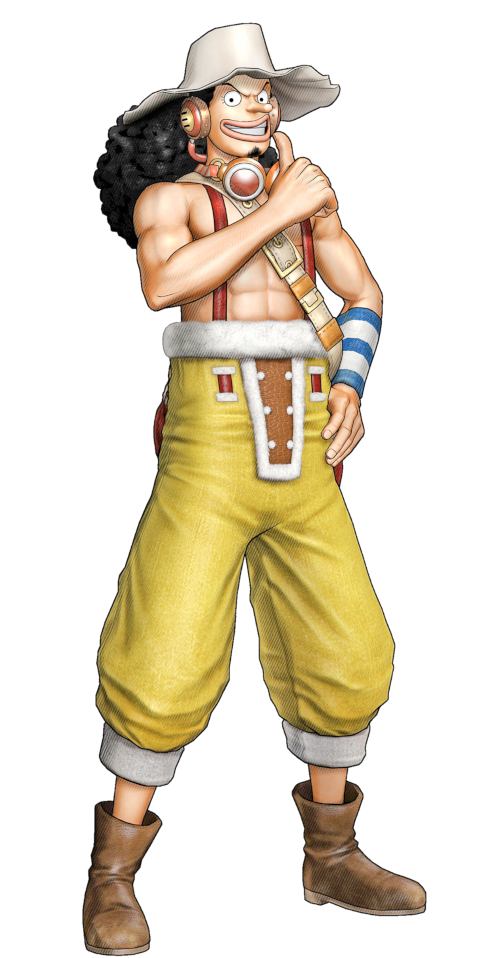

um garoto cujo sonho é se tornar o Rei dos piratas, mas para isso vai enfrentar muitos desafios.
Zoro tem o sonho de se tornar o maior espadachim do mundo, mas para isso terá que enfrentar diversos adversários formidaveis.
Nami nasceu em uma pequena vila chamada de vila cocorô, o seu desejo e juntar dinheiro suficiente para comprar a ilha que ela tanto ama.
Usopp que apesar dos seus medos, tem o desejo de ser o maior atirador de todos os mares.
